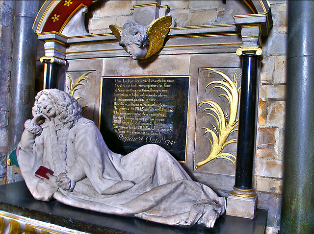

Wednesday, January the 12th, 2011
back to: title, date or indexes
Over at The Dabbler, Gaw has been taking a stroll through the “tended decadence” of Abney Park Cemetery, prompting Nige to recall a fine gravestone epitaph in his local churchyard. Which in turn prompts me to recall one of my own favourite epitaphs, that of the quack doctor Lionel Lockyer (1600–1672), whose miracle pills included sunbeams among their ingredients, in Southwark Cathedral:
Here Lockyer; lies interr'd enough; his name
Speakes one hath few competitors in fame;
A name soe Great, soe Generall't may scorne
Inscriptions whch doe vulgar tombs adorne.
A diminution 'tis to write in verse
His eulogies whch most mens mouths rehearse.
His virtues and his PILLS are soe well known..
That envy can't confine them vnder stone.
But they'll survive his dust and not expire
Till all things else at th'universall fire.
This verse is lost, his PILL Embalmes him safe
To future times without an Epitaph

Photo courtesy of Nick Garrod
Hooting Yard on the Air, November the 23rd, 2005 : “Knitted Bulgarian Folk Tale Puppet” (starts around 29:07)